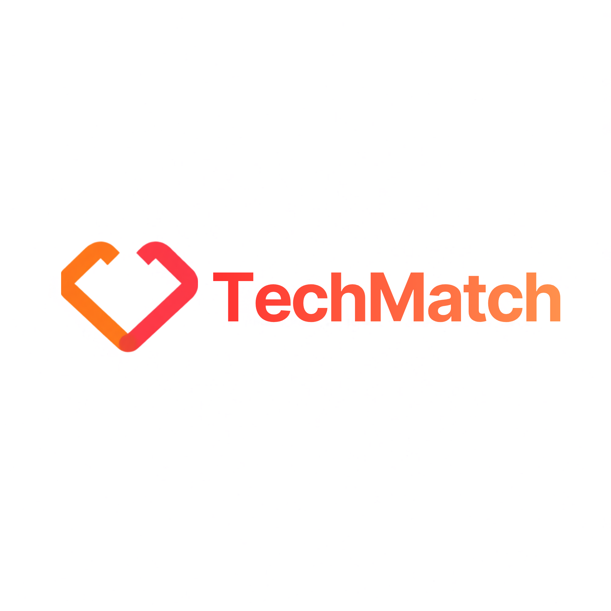

O TechMatch é uma plataforma de hospedagem e centralização de vagas de estágio, com uma ferramenta de compatibilidade integrada, que analisa o perfil dos alunos e exibe vagas compatíveis, facilitando a busca e o ingresso no mercado de trabalho.
Alunos devidamente matriculados na Faculdade de Tecnologia (Fatec).